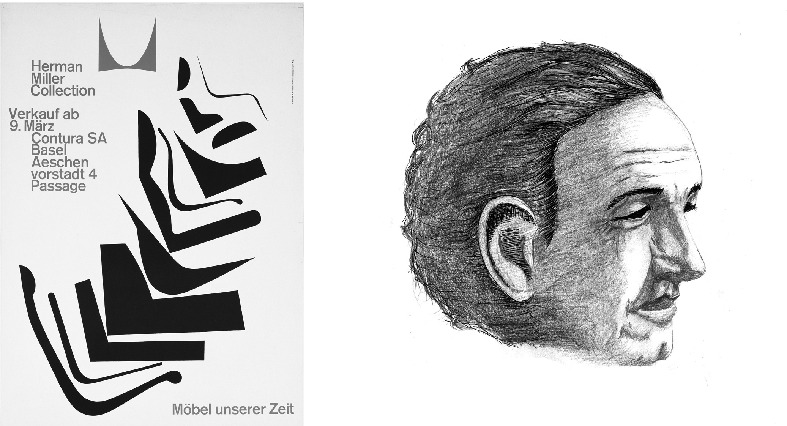

Armin Hofmann (1920 -)

Poster for “Herman Miller Collection” from 1962 (left) by Armin Hofmann (right)
Exporing Distinctive Approach
Armin Hofmann work gives even greater weight to typography and employs striking tonal contrasts. He held a teaching appoint- ment at Yale University in the mid 1950s, and was instrumental in bringing the Swiss Style to the United States.
Setting New Standards
Hoffman’s teaching methods were un- orthodox and broad based, setting new standards that became widely known in design education institutions throughout the world. His independent insights as an educator, married with his rich and inno- vative powers of visual expression, created a body of work enormously varied - books, exhibitions, stage sets, logotypes, symbols, typography, posters, sign systems, and en- vironmental graphics.
Known For
His work is recognized for its reliance on the fundamental elements of graphic form - point, line, and shape - while subtly convey- ing simplicity, complexity, representation, and abstraction.
His posters have been widely exhibited
as works of art in major galleries, such as the New York Museum of Modern Art. He was also an influential educator, retiring in 1987. In 1965 he wrote the Graphic Design Manual, a popular textbook in the field.